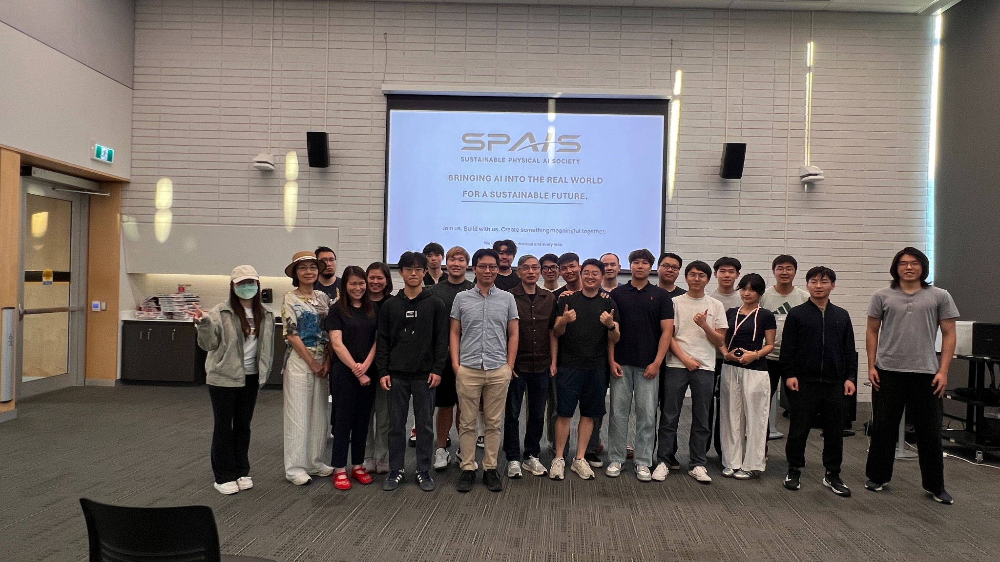

A farm visit to remember.
At Hoffman’s Strawberries, we listened, asked questions, and learned about the everyday work behind growing food.
Read the field notes
Sustainable Physical AI Society · University of Waterloo
For a sustainable future.
Curiosity connects us. Purpose moves us.
We’re a student-led community at the University of Waterloo, exploring how intelligent systems can make a useful difference in the physical world.
Through engineering projects, industry visits, and conversations in the field, we bring different disciplines together to learn, build, and ask better questions.
Meet the teamsGood design starts with listening.Hoffman’s Strawberries · October 2026
A compact, modular mobile robot for precision crop care. We’re starting with growers’ experience and a carefully defined task.
Discovery & concept development Illustrative concept · Proposed architecture
Illustrative concept · Proposed architectureOur goal is a useful, testable prototype. Field performance and crop-care benefits are still to be validated.
Help shape the projectFour disciplines. One shared build.
Discover where your curiosity could take you.
Help develop the mobile platform, mechanisms, and task tools. Explore how real farm conditions translate into practical design decisions.
Build with the mechanical team ↗Work on power distribution, motor interfaces, embedded systems, and sensor integration. Turn individual components into a dependable platform.
Build with the hardware team ↗Explore camera systems, data collection, and visual understanding. Study how a robot can recognise relevant crop features in changing conditions.
Build with the perception team ↗Explore mapping, state estimation, planning, and motion control. Connect simulation and physical tests to help the platform move reliably.
Build with the controls team ↗New to robotics? You’re welcome here. There’s room to learn, ask questions, and start small.
Meet your next teamAt Hoffman’s Strawberries, we listened, asked questions, and learned about the everyday work behind growing food.
Read the field notesOur term orientation brought students together to meet the teams and discover how they could get involved.
See the orientation recapA visit to Upside Robotics offered a closer look at autonomous agriculture and more precise nutrient management.
Explore the visitGreat projects start with people willing to share a question, an experience, or a little of their time. Let’s start a conversation.
Whether you want to build a robot, explore an idea, or learn alongside people from other disciplines, you’re welcome to join us.
Prefer email? Introduce yourself at the address below.
We’re looking to learn from growers about repetitive tasks, practical constraints, and what useful automation would look like on their farm.
Opens a draft in your email app.
Connect students with practical engineering experience. We welcome conversations about mentorship, equipment, and support for our first prototype.
Opens a draft in your email app.